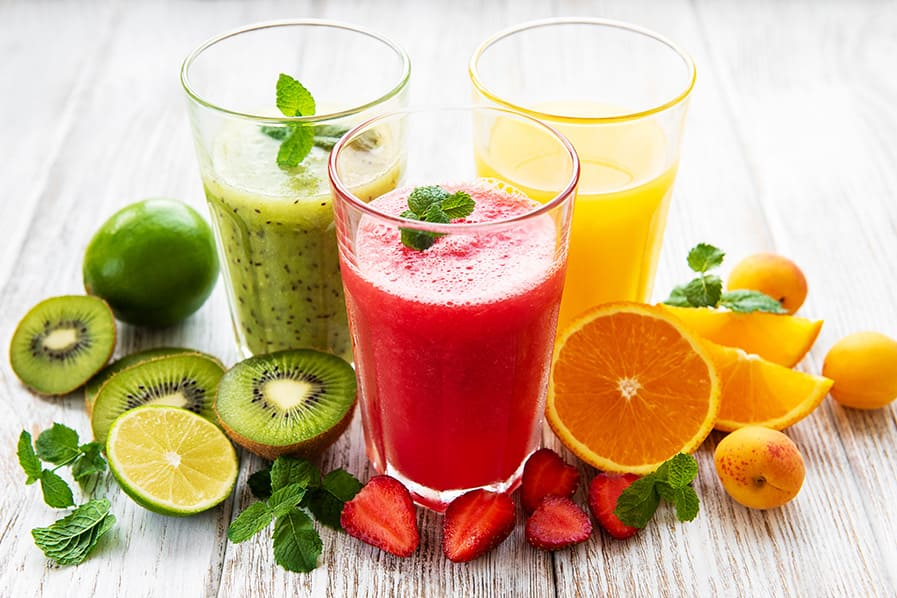
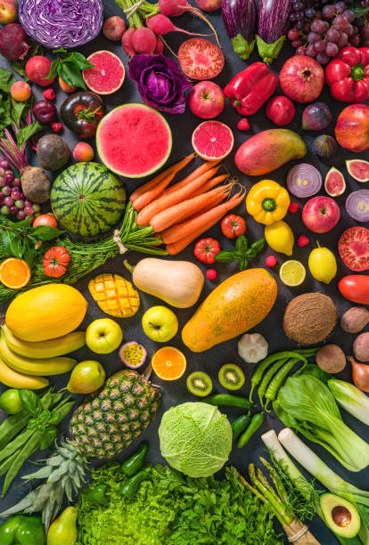
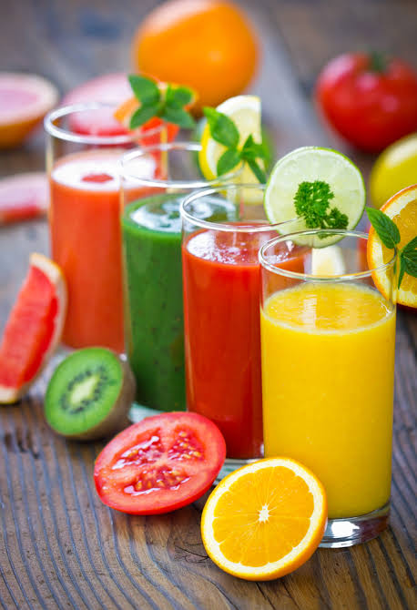
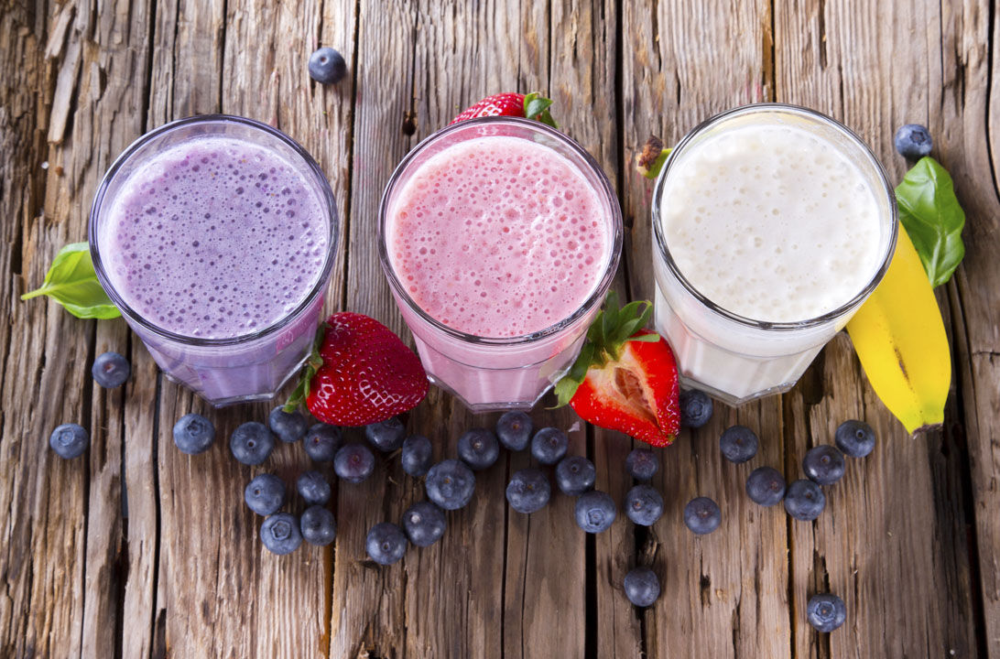

Aporte de nutrientes
Vitaminas y minerales esenciales.

Jugos NaturalesBIENVENIDOS A TU VIDA SALUDABLE
Descubre diferentes bebidas naturales, sus beneficios y cómo prepararlas en casa.
Ver recetas
BIENESTAR Y NUTRICIÓN
Los jugos naturales preparados con frutas y verduras pueden complementar una alimentación variada y equilibrada. Aportan diferentes nutrientes y permiten disfrutar de distintas combinaciones de sabores.
Vitaminas y minerales esenciales.
Contribuye a una buena hidratación.
Mezclas deliciosas y nutritivas.
Una opción natural y refrescante.
CONOCE LAS DIFERENCIAS
Conoce las dos principales formas de preparar bebidas naturales:

Se obtienen extrayendo el líquido de frutas o verduras con exprimidor o extractor.

Se preparan mezclando frutas con leche. Puedes añadir avena para más cremosidad.
RECETAS SALUDABLES
Lava, corta y pasa por el extractor. Si no tienes, licúa con un poco de agua.
Contiene betacarotenos y aporta fibra si se conserva la pulpa.
Lava todo, corta y pasa por extractor o licúa con agua.
Combina diferentes frutas y verduras que aportan variedad de nutrientes.

Lava, pela y corta los ingredientes. Pasa por el extractor o licúa con un poco de agua.
Aporta folatos y otros nutrientes propios de la remolacha.

Exprime las naranjas y sirve de inmediato.
Aporta vitamina C. La fruta entera también aporta fibra.
BEBIDAS CREMOSAS

Lava las frutillas y licúa todos los ingredientes hasta obtener una mezcla cremosa.
La leche aporta proteínas y calcio; las frutillas aportan vitamina C.

Lava, corta y licúa todos los ingredientes hasta integrar.
Combina los nutrientes de la manzana con las proteínas y el calcio de la leche.

Pela el plátano, córtalo y licúa hasta que quede cremoso.
Aporta potasio y carbohidratos; la leche aporta proteínas y calcio.
Lava los arándanos y licúa todos los ingredientes hasta que quede uniforme.
Los arándanos aportan antioxidantes y la leche aporta calcio y proteínas.
APRENDE HACIENDO
Mira cómo preparar paso a paso estas bebidas naturales.
EMPRENDIMIENTOS LOCALES
Apoya los emprendimientos locales de tu ciudad.

Dirección: H74J+MFW, Tupiza, Potosí, Bolivia
Coordenadas: 21°26'35.7"S 65°43'07.7"W
Enlace: Ver en Google Maps
Horario: Lunes a sábado: 8:00 - 19:00
Verifica la dirección y el horario antes de visitar el lugar.
“De la naturaleza a tu vaso, sabor que alimenta y vida que inspira”.
Explorar recetas